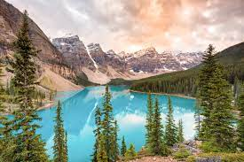
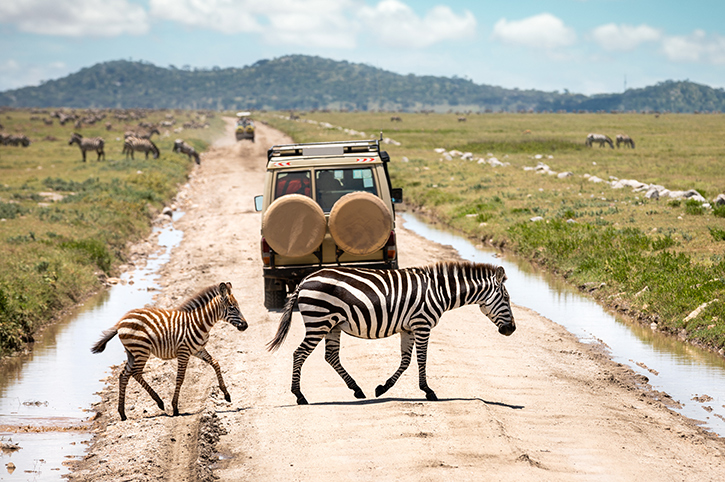

HR statistics: job search, Interviews,
hiring and recruiting

An HR professional or job candidate is in a tough position—
You need to apply data-driven methods to find the best talent or land your dream job.
But—what hiring and
recruiting statistics give you the best picture of today’s job search landscape?
Worse—how do you find them when there’s just too much market data?
And when you do—are they objective?
Will they help you improve your hiring process or job hunt? These are
the
pressing concerns we’ve seen over and over with HR professionals and job .
job candidates. The good news? We did the research for you.And when you do—are they objective? Will they help you improve your hiring process or job hunt?
These are the pressing concerns we’ve seen over and over with HR professionals and job candidates.The good news? We did the research for you. These are the pressing concerns we’ve seen over and
over with HR professionals and job candidates. The good news? We did the research for you.And when you do—are they objective? Will they help you improve your hiring process or job hunt?
Whether you’re a recruiter or a job seeker, you’ll find here the most up-to-date human resource statistics for
2020.
These stats will form the way you hire people—or how to apply for jobs in
a targeted way.
Whether you’re a recruiter or a job seeker, you’ll find here the most up-to-date human resource statistics for
2020.
These stats will form the way you hire people—or how to apply for jobs in
Whether you’re a recruiter or a job seeker, you’ll find here the most up-to-date human resource statistics for
2020.
These stats will form the way you hire people—or how to apply for jobs in
Whether
you’re a recruiter or a job seeker, you’ll find here the most up-to-date human resource statistics
for
2020.
These stats will form the way you hire people—or how to apply for jobs in
Whether you’re
a recruiter or a job seeker, you’ll find here the most up-to-date human resource statistics
for
2020.
These stats will form the way you hire people—or how to apply for jobs in this guide, you’ll find.
productivity gains of 5% to 10%, and 10% to 20% fewer on-the-job accidents. A study in Germany found that 71% of workers strongly agree that their manager is fully aware
of their projects and tasks, and 65% strongly agree that they communicate with their manager daily. Employer communication and expectations are an important factor in the culture
of a workplace.
Before we dive into the numbers, let’s start with a general macroeconomic overview of where we are in 2020 and
what it means for hiring practices, important factor i strongly agree that they communicate
let’s start
with a general macroeconomic:
- Comprehensive list of 2020’s hiring and recruitment statistics.
- Comprehensive list of 2020’s hiring and recruitment statistics.
- Glimpse into recent HR developments and trends of 2020 and beyond.
- Curated list of statistics on resumes and cover letters to help you perfect yours.
One analysis found that 75% of companies conducted remote interviews and onboarding sessions during the
pandemic,
61% of companies advertised fully remote jobs during the pandemic, and 60%
of companies expanded their
candidate search
geographically during the pandemic. Hiring and recruiting statistics reveal some interesting things about the
modern workplace. The job search, the
interview process, and the office have all changed a great deal in recent years. The numbers clearly show that
more
and more of professional life has moved online, and as technology improves, this trend
is likely to
continue. Companies
and employees alike are having to adjust to this new paradigm. As a worker and as a job-seeker, it is integral
for you
to stay engaged and productive in the face of the
changing workplace.
Banff National Park, Canada

Easily one of the most beautiful spots in Canada, Banff National Park overwhelms with views of the Canadian Rockies and
a regular cast of animals. The park is also known for its abundance of beautiful lakes, including Lake Louise, Moraine
Lake, and glacial Lake Minnewanka—each more pristine than the last.
Serengeti National Park, Tanzania

Tanzania’s portion of the Serengeti is the ideal location for an African adventure. Visit between January and March to
witness the wonder that is the Great Migration, an iconic phenomenon that sees 1.5 million wildebeest sweep through East
Africa on an annual, 1,200-mile cycle.
Salar de Uyuni, Bolivia
Southwest Bolivia’s Salar de Uyuni is the largest salt flat in the world, and is about as surreal as landscapes come.
When dry, the flat is a sheet of blindingly white salt tiles. During the wet season, the shallow lake mirrors the sky,
creating a dreamy illusion of infinity.